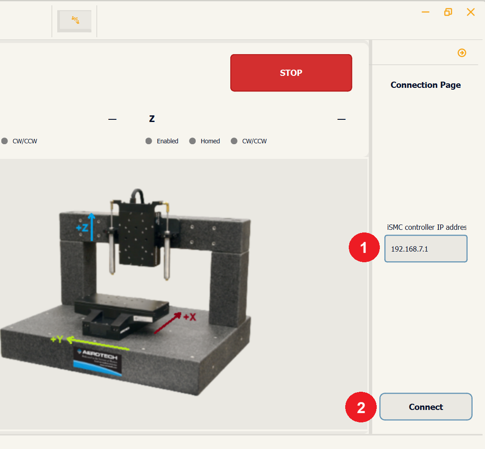
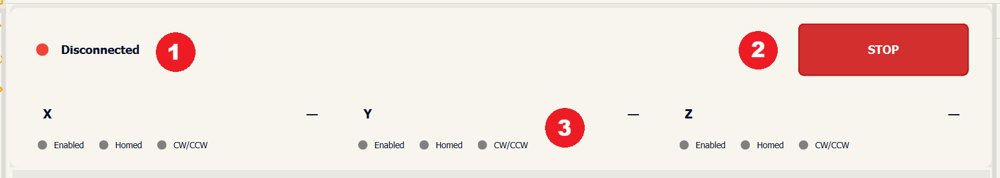
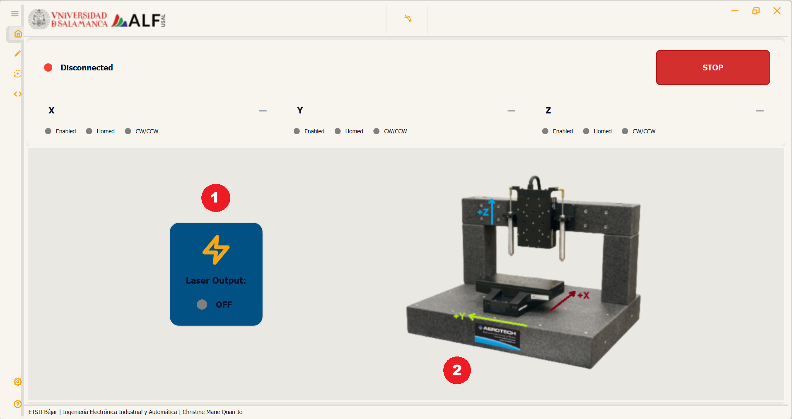
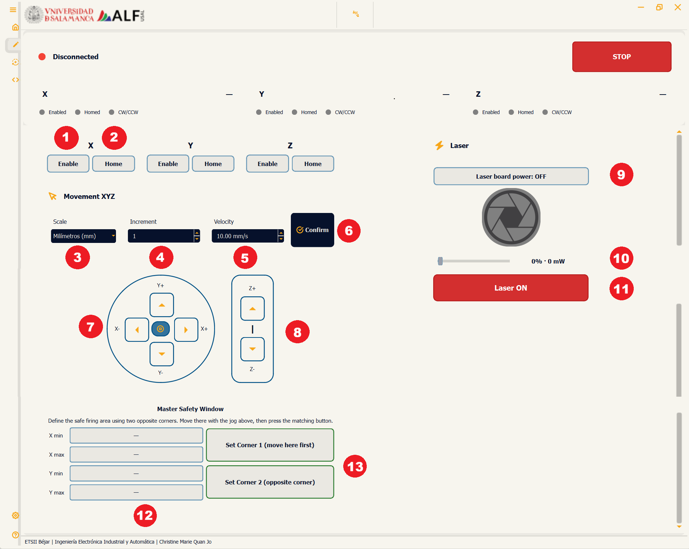
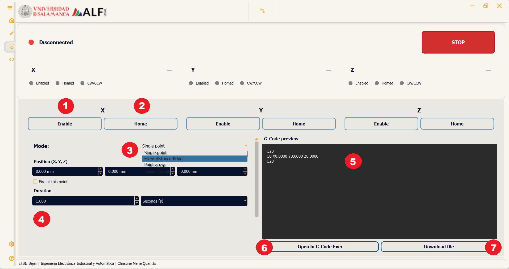
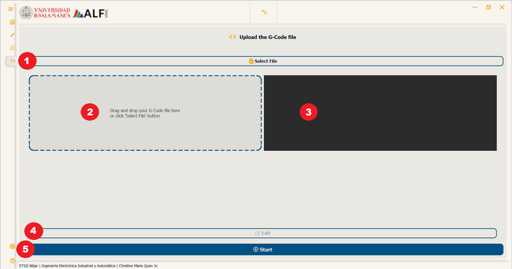
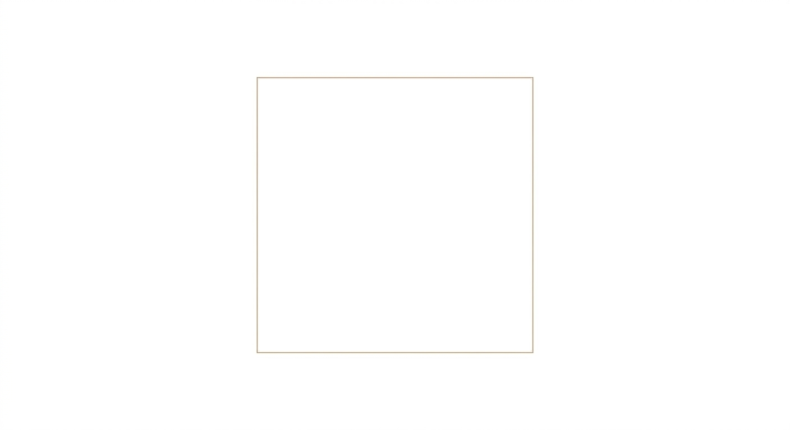

01 Installation and First Steps
- Download the latest release from Releases in the repository.
- Extract the .zip file into a folder of your choice.
- Run
laserMotionGui.exeby double-clicking it. - Connect the Automation1 controller before or right after opening the interface.
laserMotionGui.exe) — you don't need to install Python or any other dependency to run it.
docs/images/first_screen.png02 Interface Overview and Functions
The interface is organized into a Connection side panel and four main pages: Home, Manual, Auto and G-Code. A shared status panel — connection state, position and status LEDs of the three axes — stays visible across Home, Manual and Auto, so this information is never lost when switching pages.
Connection
Side panel used to establish communication with the Automation1-iSMC controller.

| # | Name | Function |
|---|---|---|
| 1 | iSMC controller IP address | Pre-filled with the factory default (192.168.7.1) or the last address used successfully |
| 2 | Connect | Starts the connection; runs in the background so the interface never freezes while connecting |
Shared status panel (visible on Home, Manual and Auto)

| # | Name | Function |
|---|---|---|
| 1 | Connection indicator | Shows whether the interface is connected to the controller |
| 2 | STOP | Cuts the laser output immediately, from any page |
| 3 | Axis status | Live position + Enabled / Homed / CW-CCW indicators, one per axis (X, Y, Z) |
Home
Monitoring page. Shows whether the laser is currently on, and an illustration of the station.

| # | Name | Function |
|---|---|---|
| 1 | Laser Output card | ON/OFF state of the laser |
| 2 | Station illustration | Reference image of the station and its associated coordinate system, defining the axes along with their positive orientations |
Manual
Direct control of the station: enable/home each axis independently, jog them with the on-screen controls, and fire the laser manually.

| # | Name | Function |
|---|---|---|
| 1 | Enable Axis | Enables the motor of the selected axis (X, Y, Z) |
| 2 | Home Axis | Runs the homing routine of the selected axis (X, Y, Z) |
| 3 | Scale | Jog step unit (nm / μm / mm / cm) |
| 4 | Increment | Multiplier applied to the selected unit |
| 5 | Velocity | Jog speed |
| 6 | Confirm | Applies the velocity value; it has no effect until confirmed |
| 7 | XY jog pad | Moves X and Y step by step |
| 8 | Z+ / Z- | Moves Z step by step |
| 9 | Laser board power | Switches the electrical power to the laser board on/off |
| 10 | Power slider | Sets the power that will be used when firing |
| 11 | Laser ON | Fires while held down, stops when released |
| 12 | Master Safety Window | X min/max, Y min/max fields of the allowed firing area |
| 13 | Set corners | Move to the specific corner, then press the matching button to record it |
Auto
Generates a program from user-defined parameters. Four modes are available: Single point, Fixed-distance firing, Point array and Power gradient, each with its own set of fields.

| # | Name | Function |
|---|---|---|
| 1 | Enable Axis | Enables the motor of the selected axis (X, Y, Z) |
| 2 | Home Axis | Runs the homing routine of the selected axis (X, Y, Z) |
| 3 | Mode selector | Chooses which of the four generation modes to configure |
| 4 | Parameters configuration | Sets the parameters of the selected mode — position X, Y, Z, duration, time scale, velocity, etc. |
| 5 | G-Code preview | Shows the program generated from the current parameters |
| 6 | Open in G-Code Exec | Sends the result directly to the G-Code page |
| 7 | Download file | Saves the result as a .gcode file |
G-Code
Executes a program, line by line — whether it was generated from Auto or written by hand.

| # | Name | Function |
|---|---|---|
| 1 | Select File | Opens a file picker to load a .gcode file |
| 2 | Drag & drop zone | Drop a .gcode file here to load it |
| 3 | G-Code preview | Shows the currently loaded program |
| 4 | Edit | Opens the loaded content for editing |
| 5 | Start | Executes the loaded program |
03 Program Examples
1. Square Path
Moves the X and Y axes together to trace the outline of a square, pausing briefly at each corner.

G28 M3 S100 G0 X0.0000 Y0.0000 Z-9.0000 G4 P10000 G1 X0.0000 Y-10.0000 Z-9.0000 F1 G4 P10000 G1 X0.0000 Y-20.0000 Z-9.0000 F1 G4 P10000 G1 X0.0000 Y-30.0000 Z-9.0000 F1 G4 P10000 G1 X-10.0000 Y-30.0000 Z-9.0000 F1 G4 P10000 G1 X-20.0000 Y-30.0000 Z-9.0000 F1 G4 P10000 G1 X-30.0000 Y-30.0000 Z-9.0000 F1 G4 P10000 G1 X-30.0000 Y-20.0000 Z-9.0000 F1 G4 P10000 G1 X-30.0000 Y-10.0000 Z-9.0000 F1 G4 P10000 G1 X-30.0000 Y0.0000 Z-9.0000 F1 G4 P10000 G1 X-20.0000 Y0.0000 Z-9.0000 F1 G4 P10000 G1 X-10.0000 Y0.0000 Z-9.0000 F1 G4 P10000 G1 X0.0000 Y0.0000 Z-9.0000 F1 G4 P10000 M5
2. Power Variation
Steps the laser power down along a straight line — 100%, 66%, 33%, then 1% — to compare the effect of different power settings.
G28 M3 S100 G0 X0.0000 Y0.0000 Z-9.0000 G4 P10000 M3 S66 G1 X0.0000 Y-10.0000 Z-9.0000 F1 G4 P10000 M3 S33 G1 X0.0000 Y-20.0000 Z-9.0000 F1 G4 P10000 M3 S1 G1 X0.0000 Y-30.0000 Z-9.0000 F1 G4 P10000 M5
3. Stairs Movement
Moves the Y and Z axes together. Since Z changes along the path, the laser's focus varies and may go out of focus at some points.
G28 G0 X0.0000 Y0.0000 Z-35.0000 M3 S100 G4 P5000 G1 X0.0000 Y-10.0000 Z-25.0000 F1 G4 P5000 G1 X0.0000 Y-20.0000 Z-15.0000 F1 G4 P5000 G1 X0.0000 Y-30.0000 Z-5.0000 F1 G4 P5000 M5
04 Laser Safety
05 Troubleshooting
| Issue | Likely cause | Fix |
|---|---|---|
| Can't connect to Automation1 | Wrong IP, cabling issue, or controller not powered | Check the IP address and the physical connection to the controller |
| An axis won't move | Axis not enabled/homed | Check that Enable and Home were pressed for that axis |
| The laser doesn't fire | Laser board power is off | Turn on Laser board power before holding Laser ON |
| G-Code won't load | Unsupported file extension | Make sure the file uses a valid extension (.gcode/.nc) |